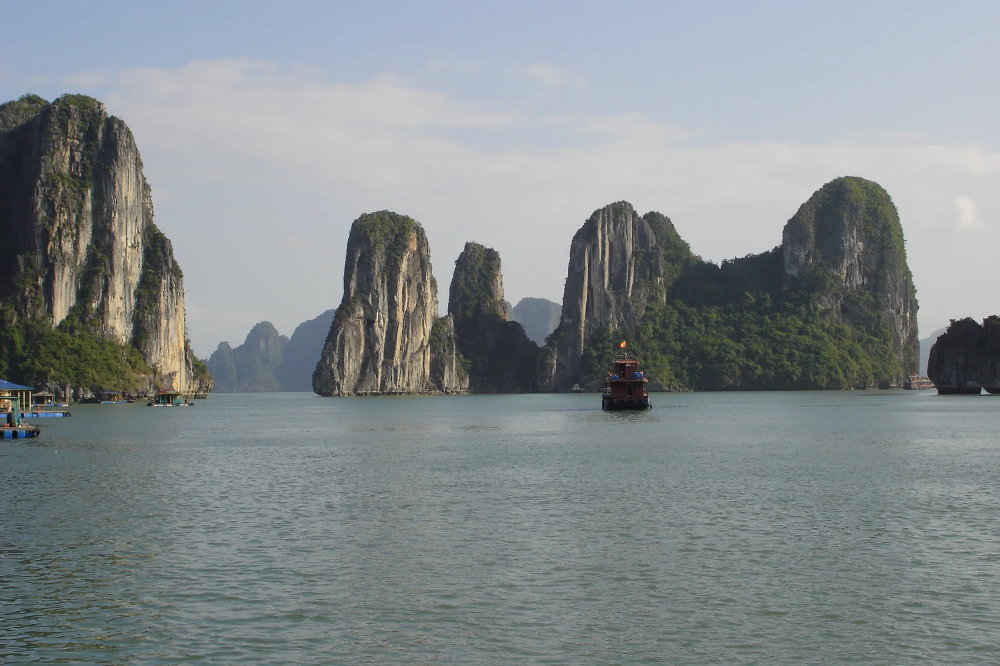
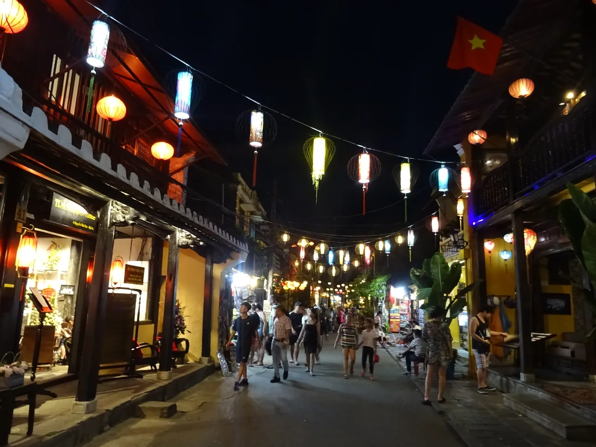
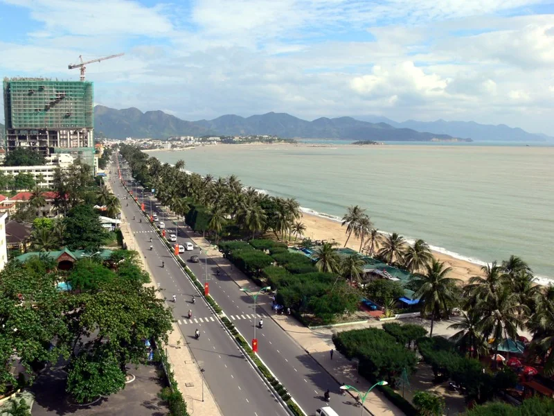

Начинаю с нуля
Хочу освоить новую профессию и подготовиться к работе во Вьетнаме.

Школа экспертного туризма во Вьетнаме
Освойте профессию организатора туров и экскурсионного эксперта ещё до переезда во Вьетнам
История • маршруты • логистика • работа с гостями • продажи • трудоустройство
От первых знаний о стране — до самостоятельного проведения программ и выхода на рынок
01 / О школе
Станьте экспертом по Вьетнаму, а не просто человеком, который здесь живёт.
Не обязательно иметь туристическое образование или опыт работы гидом. Начните с основ: изучите историю страны, научитесь выстраивать рассказ, создавать маршруты и работать с гостями и партнёрами.

02 / Для кого
Хочу освоить новую профессию и подготовиться к работе во Вьетнаме.
Хочу систематизировать знание страны и использовать его в профессиональной работе.
Хочу углубить знания, улучшить программы и создавать собственные маршруты.
03 / От знаний к практике
От понимания страны — к самостоятельной профессиональной работе
Понимать
Чампа, династия Нгуен, французская колонизация, война и независимость, современная экономика, религия и культура, язык, база историй для экскурсии.
РезультатПонимание страны и основ профессионального рассказа для гостей.
Исследовать
Нячанг, Далат, Фанранг, северные и южные островные программы, Фукуок.
РезультатЗнание ключевых локаций, их особенностей и содержания экскурсионных программ.
Создавать
Последовательность локаций, время в пути, расстояния, транспорт, тайминги, ошибки планирования.
РезультатУмение соединять отдельные локации в полноценную программу.
Работать
Туристические компании, контакты, партнёры, транспорт, отели, трудоустройство, самостоятельная работа, создание и продажа программ.
РезультатПонимание того, как взаимодействовать с участниками рынка и предлагать свои услуги.
04 / Что получите
Материалы для подготовки, проведения и предложения экскурсионных программ.
05 / Путь ученика
06 / Туристический рынок
Учитесь учитывать характер региона, интересы гостей и особенности маршрута.
Почти 16 млн
международных прибытий
за январь–август 2026 года
+14,4%
рост международных прибытий
за январь–август 2026 к январю–августу 2025

07 / Практическое применение
Маршрут и тайминг помогают распределить остановки, переезды и перерывы. Карта позволяет оценить расположение точек до выезда.
Региональные знания помогают связать историю и культуру с тем, что видят гости, и выстроить последовательный рассказ.
Логистические материалы и контакты помогают обсудить транспорт, встречу группы и условия работы с принимающей стороной.
08 / Внимание к гостю
Начните с интересов путешественника. Дополнительные услуги должны решать его задачи и вписываться в маршрут.
Ваш наставник
09 / Стоимость обучения
Один курс — от знакомства со страной до подготовки к профессиональной работе.
30 000 ₽
До оплаты уточните формат сопровождения и условия доступа к материалам.
10 / Вопросы и ответы
Нет. Программа начинается с основ: знаний о стране, профессионального рассказа и построения маршрутов.
Да. Изучение страны и подготовку к работе можно начать до переезда. Порядок практической части уточните перед оплатой.
Да. Он помогает систематизировать знания о стране и применять их в экскурсионных программах.
Нячанг, Далат, Фанранг, Фукуок, северные и южные островные программы. Дананг и Хошимин также рассматриваются в контексте туристического рынка.
Да. В программе есть готовые маршруты, тайминги и разбор логистики между локациями.
Материалы входят в стоимость. Срок и условия доступа после обучения уточните до оплаты.
Помощь с трудоустройством входит в программу. Её формат уточните до оплаты; конкретное рабочее место не обещается. Прохождение курса само по себе не даёт права на работу во Вьетнаме.
Да. Вы учитесь сочетать локации, рассчитывать время и транспорт, работать с партнёрами и предлагать свои программы гостям.
Следующая глава — ваша
Начните обучение ещё до переезда
Фотографии: Халонг — Ondřej Žváček (CC BY 2.5); Хойан — Christophe95 (CC BY-SA 4.0); Нячанг — DIGIBIT.CH / Digibit (CC BY-SA 1.0).
Wikimedia Commons. Размер и формат изменены; кадрирование и затемнение — при отображении. Фотографии сохраняют указанные лицензии.
{kind=link}
{kind=link}
{kind=link}